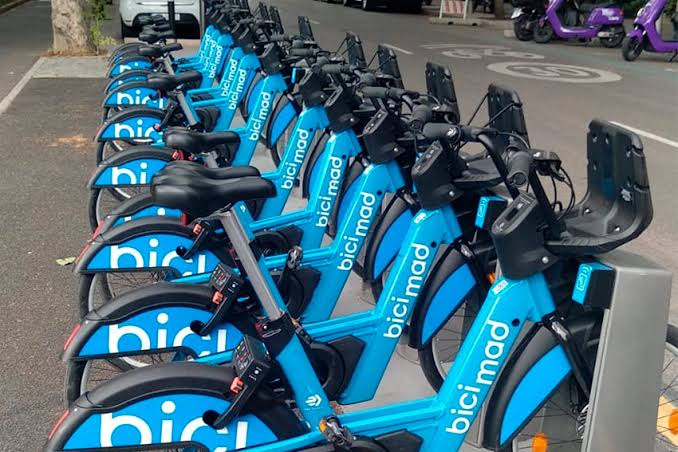
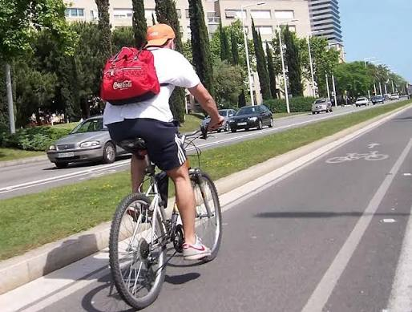
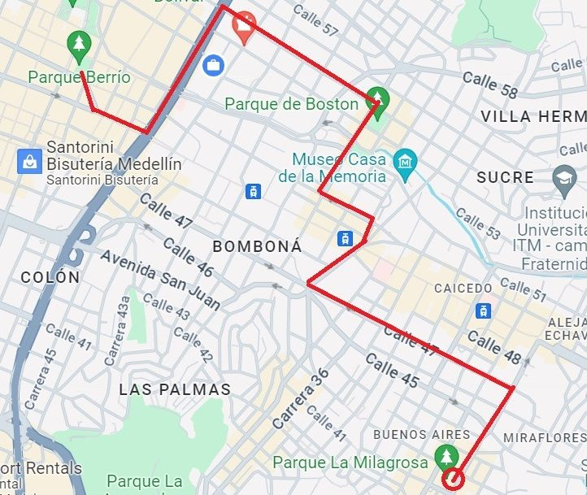

Alquiler de bicicletas
Alquila una bicicleta para recorrer Medellín a tu ritmo. El servicio incluye casco y candado para que disfrutes tu recorrido con mayor tranquilidad. ¡Elige tu camino y pedalea a tu manera!

¡Bienvenido a Rueda Libre! Queremos que descubras Medellín sobre dos ruedas. Visita nuestra sección Encuéntranos para conocer nuestra ubicación.

En Rueda Libre somos un negocio dedicado al alquiler de bicicletas en Medellín. Queremos que residentes y visitantes disfruten la ciudad de una forma saludable, práctica y divertida. Creemos que cada recorrido puede convertirse en una nueva aventura.
Alquila una bicicleta para recorrer Medellín a tu ritmo. El servicio incluye casco y candado para que disfrutes tu recorrido con mayor tranquilidad. ¡Elige tu camino y pedalea a tu manera!

Explora las calles, los paisajes y los lugares destacados de Medellín con nuestros recorridos guiados. Descubre historias locales mientras disfrutas del aire libre. Una experiencia diferente para conocer la ciudad.

Aprende nociones básicas para cuidar tu bicicleta, revisar sus componentes y reconocer cuándo necesita mantenimiento. Nuestro objetivo es ayudarte a pedalear con más confianza durante tus recorridos.
¿Quieres visitarnos o tienes alguna pregunta? Escríbenos a hola@ruedalibre.com .
Consulta nuestra ubicación en el mapa: Ver ubicación en Google Maps .